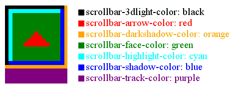

Глава 14
Коротенькая и совсем несложная глава про цвет полосы прокрутки.
Для того чтобы изменить дизайн полосы прокрутки, раскрасить её на свой лад, необходимо воспользоваться свойствами из семейства scrollbar, присвоив их нужному элементу.
В качестве элементов могут выступать любые блоки, в которых гипотетически может появляться полоса прокрутки <div>, <textarea>, <iframe> и т.д.. в том числе и сама страница - тег <body>.
В таблице ниже перечислены все свойства CSS из семейства scrollbar, а также показан результат применения этих свойств.
| Свойство полосы прокрутки: | Внешний вид: |
|---|---|
| scrollbar-3dlight-color: #ff0000; - Цвет верхней и левой тени ползунка и кнопок. |
|
| scrollbar-arrow-color: #ff0000; - Цвет стрелок на кнопках полосы прокрутки. |
|
| scrollbar-base-color: #ff0000; - Базовый цвет полосы прокрутки. |
|
| scrollbar-darkshadow-color: #ff0000; - Цвет нижней и правой тени.(dark shadow - темная тень) |
|
| scrollbar-face-color: #ff0000; - Цвет лицевой части полосы прокрутки. |
|
| scrollbar-highlight-color: #ff0000; - Цвет подсветки полосы прокрутки. |
|
| scrollbar-shadow-color: #ff0000; - Цвет тени полосы прокрутки (shadow-тень). |
|
| scrollbar-track-color: #ff0000; - Цвет дорожки для полосы прокрутки. |
|
Ну вот Вам ещё и рисунок для наглядности:
Возможные значения свойств из семейства scrollbar:
Пример:
Хочу отметить, что свойства CSS из семейства scrollbar являются расширением спецификации CSS2, введенным компаний Microsoft, и реализованным в браузерах Internet Explorer начиная с версии IE 5.5, соответственно другие браузеры, на тот момент, полностью игнорировали данное свойство. Но прошло время и многие браузеры стали подстраиваться под это дополнение к спецификации от Microsoft.
Однако, до сих пор всё не так уж гладко! Так что во многих браузерах стиль полосы прокрутки или игнорируется или работает не совсем корректно.. например многие игнорируют данное свойство для тега <body> или не понимают некоторые отдельные свойства скроллбара.
Ниже приведу несколько советов, которые возможно помогут решить данную проблему в тех или иных браузерах. Употребляю слово "возможно" потому что очень трудно отследить в динамике за всеми изменениями разных браузеров. Мир не стоит на месте каждый день, там или здесь, что-то меняется! Жаль вот только что кроссбраузерность всегда остаётся головной болью!
Но что то я заговорился.. Итак, ряд "таблеток":
1. По возможности используйте вот такой заголовок <!DOCTYPE>:
2. Указывайте свойства скроллбара не только для тега <body> но и для тега <html>
Вот так:
3. Попробуйте, если это более менее рационально для Вашего сайта, внедрять стили полосы прокрутки используя атрибут style, а не одноименный тег в "голове" документа или внешний css файл
Вот так:
Возможно, данные рекомендации сработают в некоторых браузерах, в любом случае в IE (начиная с версии 5.5) всё будет работать корректно, а раз хоть где-то работает это уже хорошо!
Так как scrollbar является одним из важных элементов интерфейса, постарайтесь не вести пользователя в заблуждение, используя совсем уж нестандартный дизайн полосы прокрутки.
Если Вам прямо таки совсем необходим нестандартный скроллбар, не только нестандартный цвет, он и нестандартная форма, да и еще и работающий во всех браузерах используйте скрипты, но не забывайте про первый совет!!
В браузере внешний вид полосы прокрутки черпается из настроек Windows и например у меня, она имеет вот такой вид:
Но как только Вы примените к полосе прокрутки любое свойство из семейства scrollbar, связь с настройками Windows потеряется, точнее станет "по умолчанию" и полоса приобретёт вот такой вид: